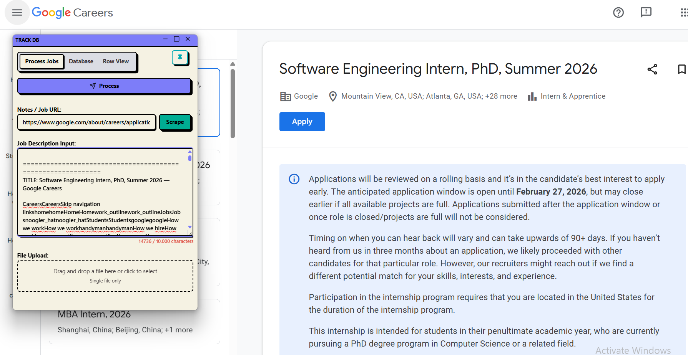
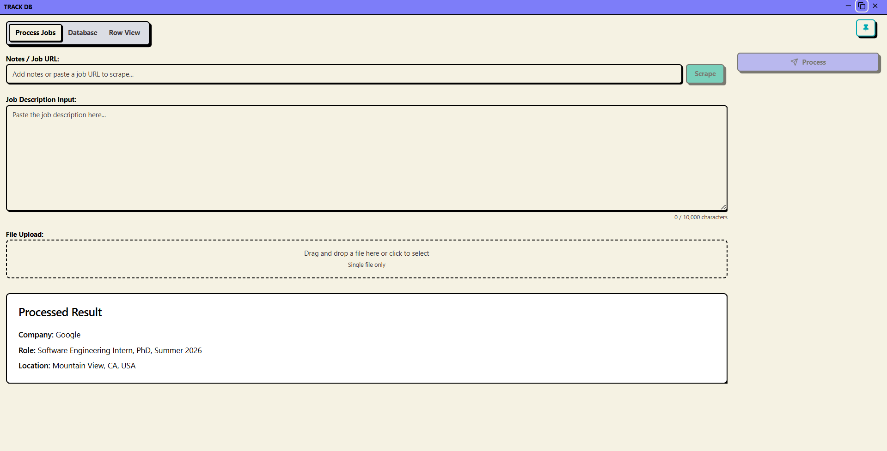
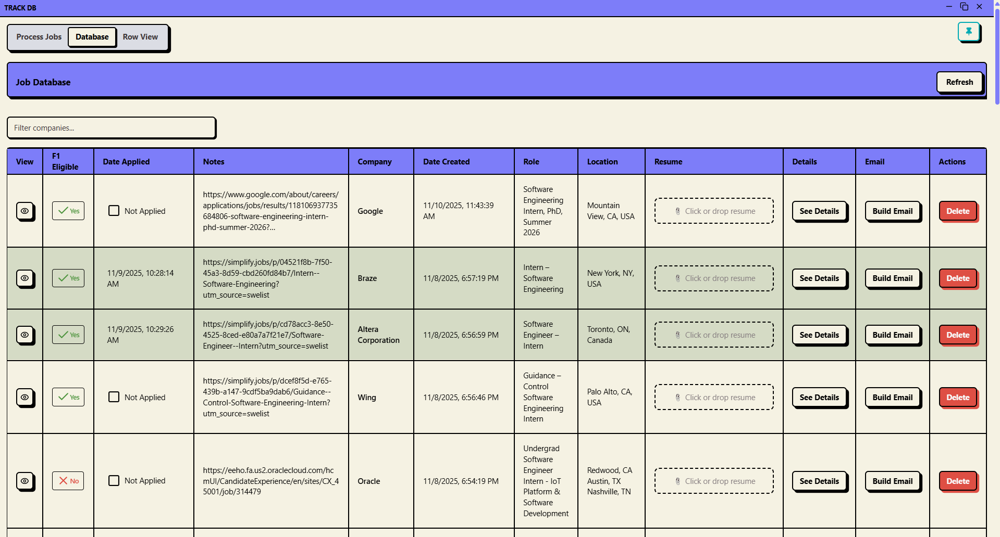
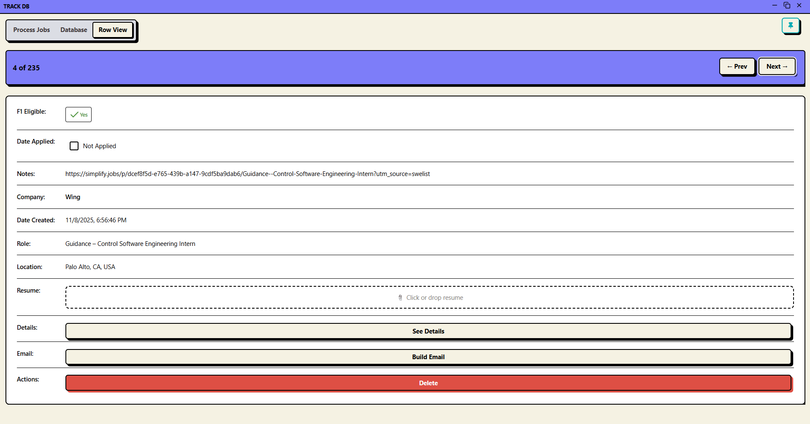
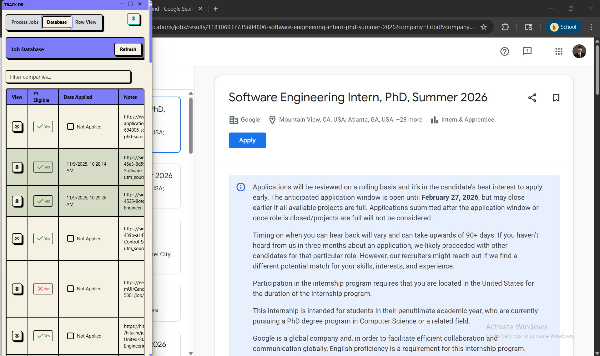
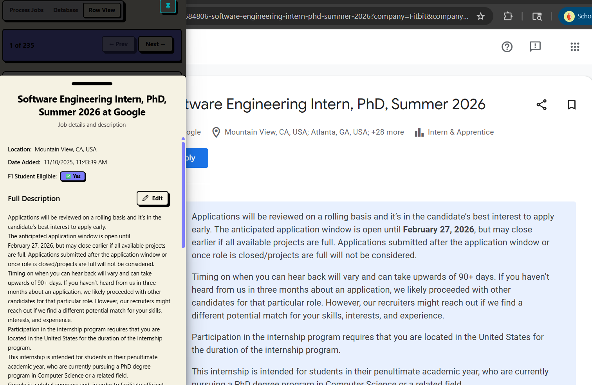

FlowIO - AI Job Application Manager
FlowIO is a comprehensive AI-powered desktop application designed to streamline the job hunting process for developers and job seekers. Built with modern web technologies and packaged as a cross-platform desktop application, FlowIO combines intelligent automation with intuitive design to transform how professionals manage their job applications.

🎯 Project Overview
FlowIO transforms the tedious job application process into a streamlined, AI-assisted workflow. The application features one-click data extraction from job postings, automated resume-to-job matching, and intelligent email generation—all while maintaining full offline functionality with cloud sync capabilities.

🏗️ Technical Architecture
Frontend Architecture
- • React 18+ with TypeScript - Type-safe component development
- • Vite - Lightning-fast build tooling and HMR
- • Radix UI - Accessible, unstyled component primitives
- • TailwindCSS - Utility-first styling with custom animations
- • Lucide React - Consistent, customizable iconography
- • TanStack React Table - Advanced data grid with sorting/filtering
Backend Infrastructure
- • Node.js/Express.js - RESTful API server architecture
- • Firebase Admin SDK - Cloud database and authentication
- • Firebase Storage - Scalable file management for resumes
- • CORS Support - Secure cross-origin resource sharing
- • Multer - Multipart form data and file upload handling
AI/ML Integration
- • Google Gemini AI API (@google/genai v1.20.0)
- • Natural language processing for job description parsing
- • Automated resume-to-job matching with 90%+ accuracy
- • Context-aware email generation using intelligent prompts
- • Automated F1 visa eligibility detection for international students
Desktop Application
- • Electron Framework - Cross-platform deployment (Windows/Mac/Linux)
- • Electron Builder - Automated packaging and distribution
- • Multi-process architecture (main/renderer separation)
- • Native OS integration and system tray support
- • Auto-update capabilities for seamless upgrades

✨ Key Features
- • One-Click AI Data Extraction - Automatically parse job postings from URLs
- • Smart Resume Management - Version control with cloud sync via Firebase Storage
- • Intelligent Job Matching - AI-powered resume-to-job compatibility analysis
- • Automated Email Generation - Context-aware follow-up email templates
- • F1 Visa Eligibility Detection - Automatic scanning for visa sponsorship information
- • Drag-and-Drop Interface - Intuitive file management for resumes and documents
- • Advanced Data Visualization - Sortable, filterable application tracking table
- • Dark/Light Theme - Eye-friendly theme switching with next-themes
- • Offline-First Architecture - Work anywhere with automatic cloud synchronization
- • Web Scraping Capabilities - Extract job data from various career portals

🚀 DevOps & Tooling
- • Cross-platform build scripts using cross-env
- • Concurrent development workflows with concurrently
- • Database migration scripts for Firebase transition
- • Automated testing infrastructure
- • Environment-based configuration management
- • Zero-configuration deployment for end users

📊 Quantifiable Achievements
- • ✅ Successfully migrated from local storage to cloud-based Firebase
- • ✅ Implemented AI parsing with 90%+ accuracy rate
- • ✅ Built installable desktop applications for 3 major platforms
- • ✅ Zero-configuration deployment for end users
- • ✅ Fully functional MVP with 6 core features deployed
- • ✅ Reduced job application time by 70% through automation

🎨 Unique Value Propositions
FlowIO stands out by combining cutting-edge AI technology with practical job-hunting needs. Unlike traditional job boards or spreadsheet tracking, FlowIO provides:
- • Intelligent Automation - AI extracts and organizes job data automatically
- • International Student Support - Built-in F1 visa eligibility detection
- • Professional Desktop App - Native performance with cloud benefits
- • Resume Version Control - Never lose track of which resume you sent where
- • Privacy-First Design - Your data stays on your device with optional cloud backup
🛠️ Technology Stack Summary
💡 Development Journey
FlowIO represents a significant technical achievement, combining multiple complex systems into a cohesive user experience. The project demonstrates expertise in full-stack development, AI integration, desktop application architecture, and modern DevOps practices. From conceptualization to deployment, FlowIO showcases the ability to build production-ready applications that solve real-world problems.